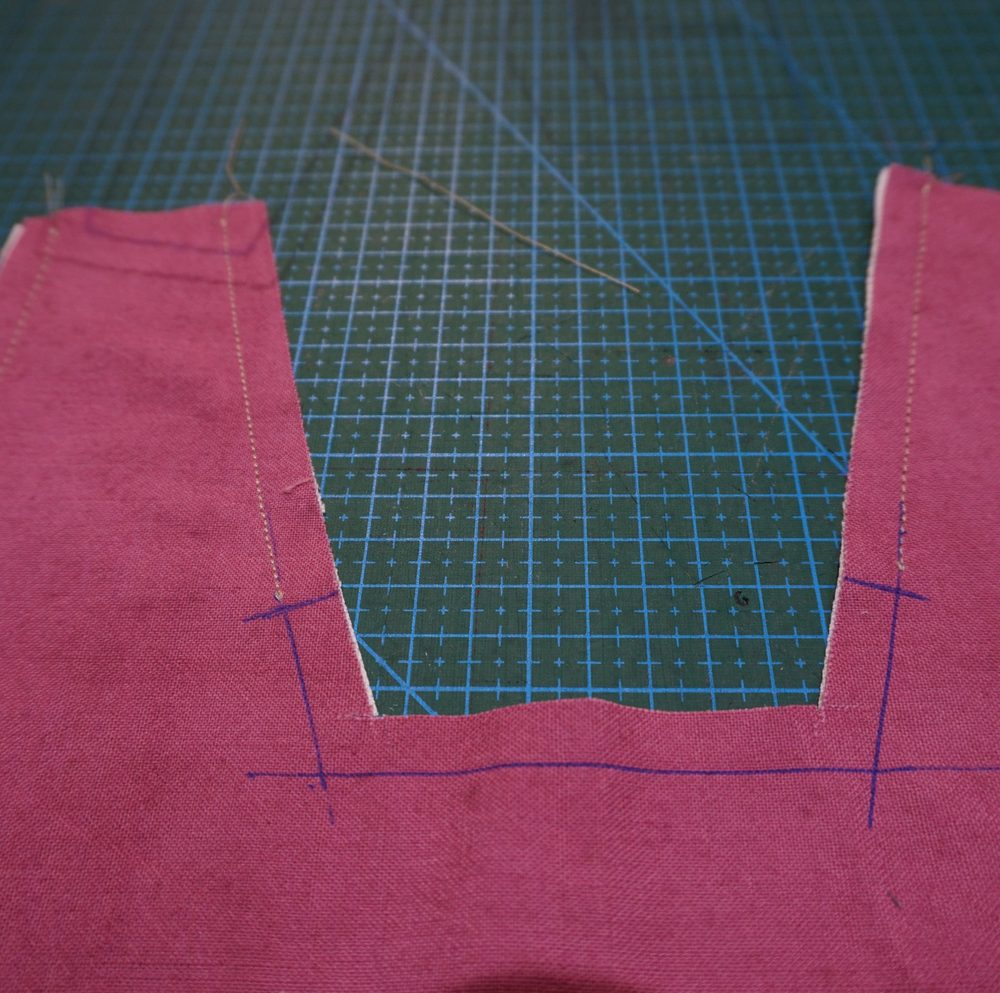
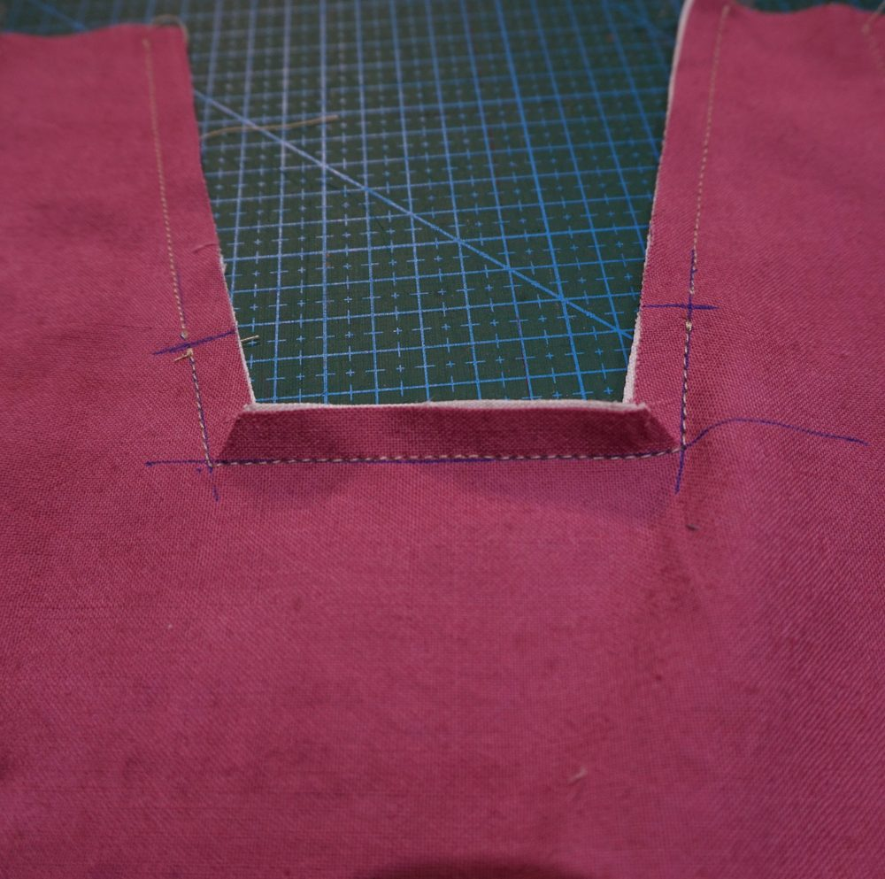
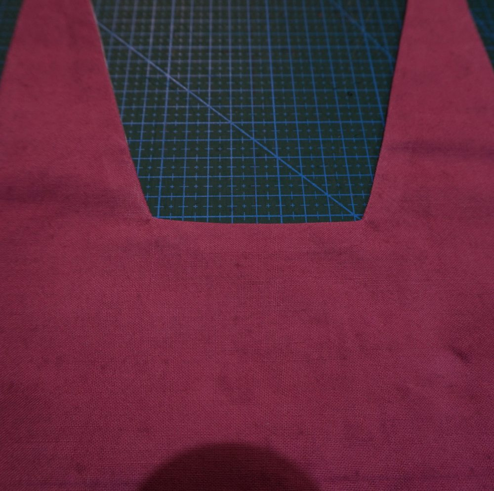
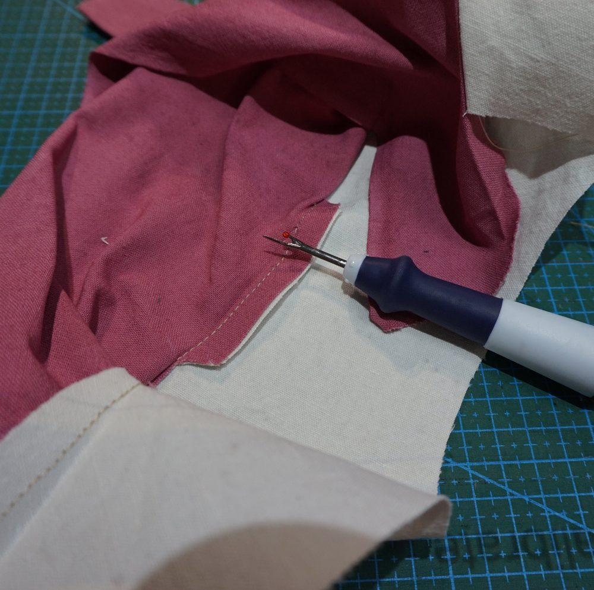
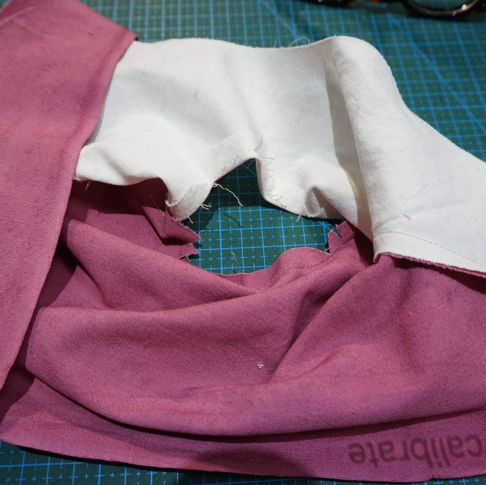
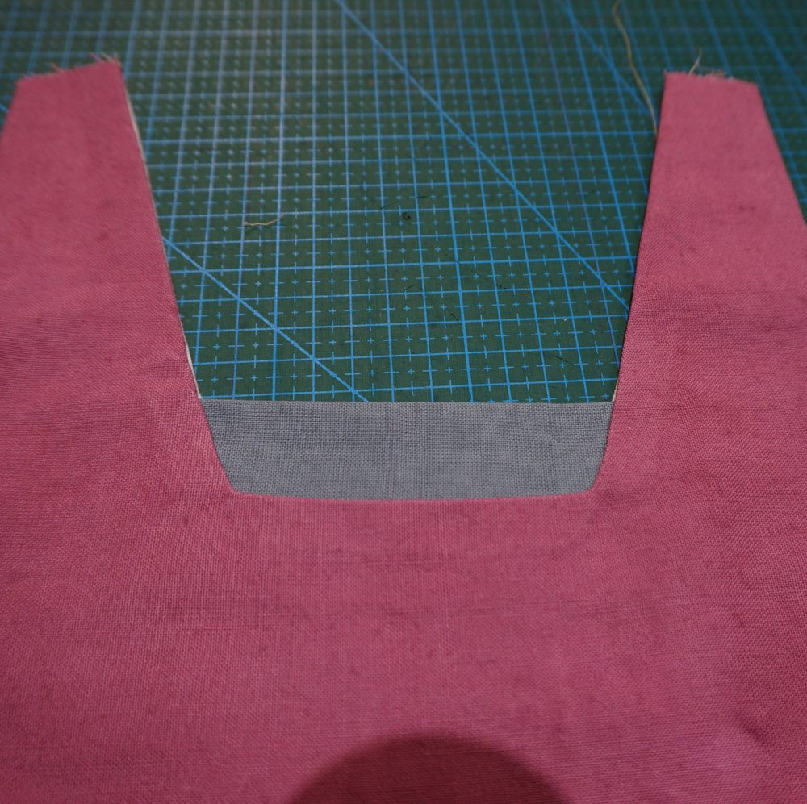
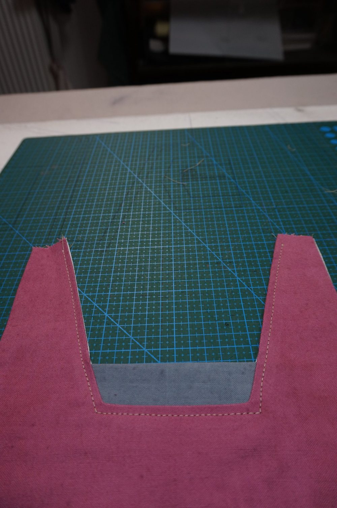

Robe Béa : guide de couture
Ce guide donne l’ordre de montage de la robe Béa. Les étapes des poches s’affichent selon votre choix.
Fournitures
- Tissu principal : lin, coton ou métis léger, uni. En 140 cm de large, environ :
- mini : 1,80 m ;
- moyenne : 2,20 m ;
- longue : 2,80 m.
- Tissu des décors : environ 30 cm d’un wax ou d’un tissu à motifs, pour les décors d’encolure, et pour le passepoil et la garniture des poches passepoilées.
- Tissu secondaire, pour les parementures : environ 50 cm, au choix dans le tissu de la robe, dans un coton fin ou dans le tissu des décors. Il est là pour rehausser le style de la robe : un contraste de couleur et une touche de fantaisie, qui se devinent au bord des encolures et des emmanchures quand on bouge.
- Entoilage thermocollant léger : un petit morceau, seulement pour les poches passepoilées.
Les pièces à couper
| Pièce | Tissu | Nombre |
|---|---|---|
| Devant | principal | 1, au pli |
| Dos | principal | 1, au pli |
| Parementure devant | secondaire | 1, au pli |
| Parementure dos | secondaire | 1, au pli |
| Décor devant | décors | 1, au pli |
| Décor dos | décors | 1, au pli |
| Poches de côté : Poche couture côté | principal ou coton fin | 4 |
| Poches passepoilées | pièces du patron Poches passepoilées, type Un passepoil : passepoil et garniture dans le tissu des décors ; dessus et dessous de poche en principal ou coton fin ; renfort et entoilage thermocollants | voir ce patron |
Reportez les repères : pinces, crans, ouverture des poches, lignes de pli de l’ourlet.
Avec les poches passepoilées, les crans des côtés du devant et du dos ne servent à rien : ignorez-les.
Le devant est un peu plus long que le dos : c’est normal. La pince de poitrine reprend cette longueur au côté.
Montage
Préparer
Faites une piqûre de soutien à 0,8 cm du bord, le long des encolures et des emmanchures du devant et du dos, pour qu’elles ne se déforment pas.
Les pinces de poitrine
Pliez chaque pince endroit contre endroit en faisant coïncider les crans. Piquez du bord vers la pointe, en finissant à ras du pli. Nouez les fils à la pointe sans point arrière. Repassez la pince vers le bas.
Les poches passepoilées
Les poches passepoilées se font avec le patron Poches passepoilées, type « Un passepoil », que la page de la robe ouvre déjà réglé. Coupez le passepoil et la garniture dans le tissu des décors : ils font écho à l’encolure. Posez le cache du cadre sur l’endroit du devant, les deux bouts de sa fenêtre sur les deux petits traits qui terminent la ligne d’ouverture, puis suivez le guide de couture des poches passepoilées, partie « Un passepoil ». Faites-vous la main sur une chute de tissu avant de couper dans la robe : c’est la seule étape délicate du modèle.
Les décors d’encolure
- Pliez les deux décors, devant et dos, sur leur ligne de pli, et repassez.
Les parementures
- Surfilez le bord libre (le bas) des deux parementures, ou rentrez-le de 0,5 cm et piquez.
- Posez la parementure devant sur le devant, endroit contre endroit, en laissant les épaules et les côtés ouverts. Piquez à 1 cm le long de l’encolure et des deux emmanchures.
Attention : arrêtez la couture de l’encolure aux repères du décor, par des points d’arrêt. - Cousez le contour du décor. Cette couture est provisoire.

L’encolure cousue jusqu’aux repères du décor, puis le contour du décor, en couture provisoire. - Recoupez les marges à 0,5 cm, crantez les arrondis et les angles de l’encolure sans couper la piqûre.

Les marges recoupées et les angles crantés. - Retournez la parementure sur l’envers, faites ressortir les angles et repassez en faisant légèrement rouler la couture vers l’intérieur.

La parementure retournée et repassée, vue sur l’endroit. - Décousez la couture provisoire du contour du décor.

On découd la couture provisoire. 
L’ouverture dégagée, vue sur l’envers. - Glissez le décor devant, plié, dans l’ouverture ainsi dégagée, entre le devant et sa parementure.

Le décor est glissé dans l’ouverture. - Faites une surpiqûre à 0,5 cm du bord, tout autour de l’encolure : elle fixe le décor entre le devant et sa parementure, et empêche la parementure de ressortir.

La surpiqûre fixe le décor et termine l’encolure. - Faites de même au dos.
Les épaules
- Dépliez les parementures. Assemblez les épaules du devant et du dos, endroit contre endroit, sans prendre les parementures. Ouvrez les coutures au fer.
- Rentrez les marges des épaules des parementures l’une vers l’autre et fermez-les à la main, à points glissés.
Les poches de côté
- Piquez un sac de poche sur chaque côté du devant et du dos, endroit contre endroit, entre les crans, à 0,5 cm du bord.
- Couchez les sacs vers l’extérieur et repassez.
Les coutures de côté
- Dépliez les parementures. Posez le devant sur le dos, endroit contre endroit, crans et coutures d’emmanchure face à face.
- Piquez chaque côté en une seule fois, du bas de la parementure jusqu’au bas de la robe.
- Avec les poches de côté : piquez jusqu’au premier cran, contournez le sac, puis reprenez la couture de côté au second cran.
- Surfilez les marges ensemble, ou séparément si vous ouvrez la couture au fer.
- Repliez les parementures sur l’envers et fixez-les aux coutures de côté par quelques points à la main.
L’ourlet
- Repliez 1,5 cm sur l’envers, puis 4 cm en suivant la ligne de pli. Repassez.
- Piquez à la machine près du bord du rempli, ou cousez à points invisibles pour un ourlet discret.
Finitions
Donnez un dernier coup de fer, en insistant sur les encolures, les emmanchures et les pinces.
Conseils
- Faites d’abord un essai dans un tissu bon marché (un vieux drap, par exemple), surtout pour vérifier la longueur et la profondeur des encolures.
- Pour un wax : centrez un motif sur le décor devant, c’est ce qui se voit le plus.
- Encolure dos : si vous portez un soutien-gorge, ne la descendez pas de plus de 6 cm environ.